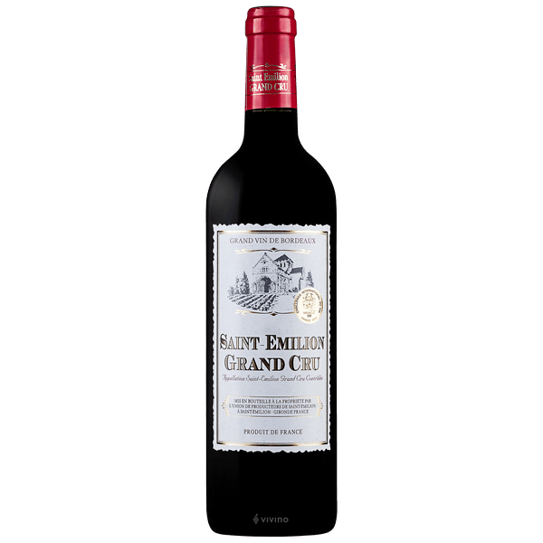

Os vinhos Saint-Émilion Grand Cru são elaborados principalmente a partir das variedades de uvas Merlot e Cabernet Franc, com uma menor proporção de Cabernet Sauvignon e, em alguns casos, Malbec e Petit Verdot. A Merlot é a variedade dominante, contribuindo com corpo, fruta e suavidade ao vinho, enquanto a Cabernet Franc adiciona estrutura, complexidade e notas herbáceas.